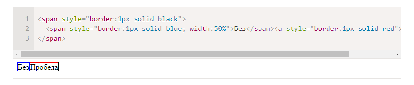
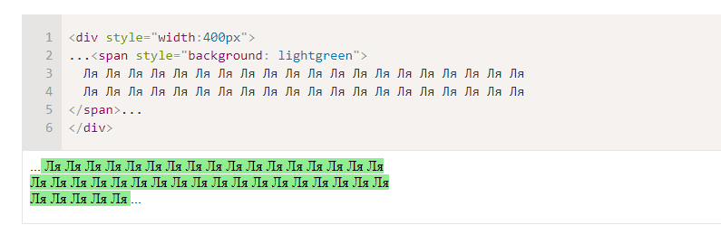
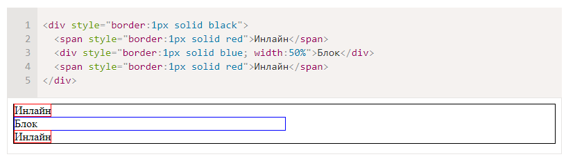

Значение inline
- Элементы располагаются на той же строке, последовательно.
- Ширина и высота элемента определяются по содержимому. Поменять их нельзя.
Например, инлайновые элементы по умолчанию: , .
Если вы присмотритесь внимательно к примеру выше, то увидите, что между внутренними <span> и <a> есть пробел. Это потому, что он есть в HTML.
Если расположить элементы вплотную – его не будет:
Содержимое инлайн-элемента может переноситься на другую строку.
При этом каждая строка в смысле отображения является отдельным прямоугольником («line box»). Так что инлайн-элемент состоит из объединения прямоугольников, но в целом, в отличие от блока, прямоугольником не является.
Это проявляется, например, при назначении фона.
Например, три прямоугольника подряд:
Если инлайн-элемент граничит с блоком, то между ними обязательно будет перенос строки:
